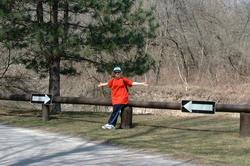
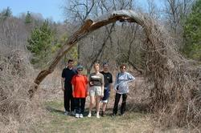
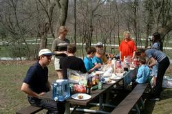
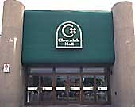

|
Вот, наконец, и преобразился вид с нашего балкона. Поначалу город казался покрытым нежно-зеленоватыми
облачками,
когда только распускались листики на деревьях. Но теперь листья распустились окончательно. И город
словно
купается в океане сочной густой зелени. А маяком в том океане неизменно служит наша знаменитая башня.
:)
Под окном сегодня некие двое боролись с травой, или, говоря буржуйским языком, подстригали газончик.
Из созерцания оного зрелища я вынесла, что и здесь наличествует дискриминация. Ибо дядичка разъезжал
кругами
на газонокосилке, лихо поворачивая руль то в одну, то в другую сторону, а тетечке досталась ручная
косилка
(типа тележки с моторчиком), которая вечно у нее за что-то цеплялась :). Но это я шучу,.. насчет
дискриминации.
Зато теперь газон стал зеленый-зеленый, посреди которого начал наконец-то функционировать
долгожданный фонтан
(вчера включили). Но самое замечательное в том газоне то, что имеется на нем дерево. И если раньше
оно выглядело
совершенно обыкновенным образом, то сейчас оно цветет. Сплошь покрытое красивыми ярко-розовыми
цветами, оно
похоже на кусочек зари. Надо будет обязательно сфотографироваться возле него, пока не отцвело.
На подходе 9 мая - День Победы. Но, видимо, здесь днем победы является какой-то другой день, хотя по
телевизору
активно показывают документальные кадры о войне.
Вообще, что касается телевизора… Показывают столько каналов, сколько входит в набор, за который ты
уплатил.
Наборы каналов, в свою очередь, представляют разные компании. Кто-то, например, устанавливает себе
каналы
фирмы Rogers. Мы вот выбрали 72 канала компании E-cable. Большинство каналов идут, конечно, на
английском
языке. Чуть меньше - на французском (черти, все фильмы с Бельмондой показывают на французском :).
Есть какой-то
латиноамериканский канал, есть китайский. Иной раз прорывается польский. Русских каналов нет. Хотя
Михаил,
который у нас проездом останавливался на два денька, говорит, что обнаружил ОРТ, пока нас дома не
было. Но это,
похоже, только ему так повезло :). Так же, как и в России, здесь очень любят показывать старые
фильмы, еще
черно-белые, с классическими актерами и актрисами. Причем странно, что выражение лиц тех актеров
очень сильно
напоминает выражение лиц актеров из старых-старых русских фильмов. Видно, в каждое время существует
своя
мировая мода на кино и актеров. И всякие железные занавесы - тому не помеха. Я тут посмотрела их
«Анну Каренину»
и «Доктора Живаго». Оба фильма я уже видела раньше - в переводе. Первый фильм у нас был на кассете,
а «Доктора
Живаго» я созерцала еще на втором курсе в видеосалоне нашей общаги. С тех пор этот фильм, видно,
реконструировали, ибо он довольно-таки старый. Получила, надо сказать, истинное наслаждение. Актеры
очень
красивые. Все выдержано в духе аристократизма. Я даже расстрогалась и пустила слезу. Правда, они
смешно
произносят «Паша» и «Комаровский», зато «Лара Антипова» у них получается очень даже ничего. Короче,
фильм
замечательный! На высшем - классическом - уровне. Чего, конечно, не скажешь об «Анне Карениной». Сей
фильм
вышел совсем недавно, и от Толстого там - только сюжет и мысль о боге. А чувства, образы и
характеры, на мой
взгляд, - фуфло. Аристократизм же там и близко не стоял.
Показывали еще «Братьев Карамазовых», да мне, к сожалению, не довелось посмотреть. - Прохлопала :).
Ну да в
следующий раз погляжу. Здесь имеют обыкновение по нескольку раз показывать одни и те же фильмы.
Конечно, не все и
с разной частотой.
Тщетно ищу в программе «Мою прекрасную леди». Помню, видела сей фильм в кинотеатре и была просто без
ума от
него. Но вот… почему-то не показывают… Да и хватит уже о телевизоре :).
Кстати, здесь 9 мая - Mother's day. Мы еще толком не знаем, что это за праздник, но вроде как он
напоминает
8 Марта :). И во всех магазинах - неделя предпраздничных скидок! Под это дело мы с Андрюшей
закупились летней
одеждой и обувью.
С работой у меня пока полная неопределенность. Всегда чего-то нужно ждать, куда-то звонить, что-то
опять делать.
Вот сегодня вновь разослала кучу резюме. Уже даже успели отреагировать. Созвонились, и в понедельник
я опять
пойду на интервью. "Опять", потому что я и несколько дней назад ходила на интервью (с которым пока
неизвестно,
что будет дальше), и вчера ходила на интервью.
Кошмар! Вчера было интервью в IBM Toronto Laboratory, и заняло оно у меня почти весь день. Ушла к 10
a.m.,
вернулась к 5 p.m. (здесь у нас не говорят 17 часов или 16, только 5 или 4, но p.m.) :). Сначала я
общалась с
двумя главными менеджерами из двух разных отделов (с каждым по часу). Менеджеры в летах, солидные,
сурьезные.
Один из них очень сильно напоминал Роберта Де Ниро, что, однако, не помогло разрядить обстановку :).
Вообще,
какой-то тяжеловатый дух царил в этом IBM, или просто мне так показалось. Потом заполняла их форму
на 4 страницы.
Потом мне предложили нахаляву поиметь ланч, после чего я должна была отправиться на прохождение
теста. Обедать
я не стала, мне было не до того :). Провела отведенное для этого время в washroom-е. :) Но даже там
мне их
reception-истка не дала покоя. Заходит и спрашивает: "Natalia, are you okay?" :) Какое там okay! :)
Потом был
тест... Лучше бы это был программерский тест... Но это был тест типа IQ: за очень небольшое
количество
времени надо было ответить на кучу мелких вопросиков. И поскольку вопросики были не на родном мне
языке,
то у меня еще уходило никем не предусмотренное :) время на их понимание. Короче ответила я где-то на
половину
вопросов. С ужасом думаю о том, как будут они смотреть на мои результаты. Видно, пожалеют о времени,
потраченном на общение с подобной дегенераткой :). Хотя на самих интервью я держалась нормально, и
на их
"каверзные" вопросы (типа чем отличается JAVA от С++) отвечала по-деловому. Ох... :) Ну да ладно.
Радует,
что все другие компании о "моем IQ" ничего не знают. :)
Андрюша овертаймит уже меньше. Видимо, малость догнал поезд :). Да собственно он и тормозил-то не по
своей вине,
а по вине тамошних "писателей", то бишь программистов, а точнее, проектировщиков. Там, кстати, народ
пишет
по-простому. Наворотил кода, и если скомпилялось, то значит готово. Они сначала с Темой не могли
понять,
почему все пишут быстро, а они долго. А оказалось, что другие даже и не проверяют, что написали, не
тестируют.
Скомпилялось, и - хорошо. А когда тестировать собираются, непонятно. Дело в том, что проект-то
большой, общий,
и время от времени нужно отдельные его части, созданные разными людьми, интегрировать. Вот тут-то и
случается
беда. У этих-то рашен гайзов все на мази, а у тех нифига недоделано, недописано и, соответственно,
не работает.
Самое прикольное, что когда те говорят, что у них все готово, их сразу же переключают на другие
проекты, и
доделывать ту хренотень, которую они понаписали, как бы некому.
Как-то Андрюша вернулся с работы очень возбужденный и принялся рассказывать, какой смешной код они с
Темой в
тот день созерцали. Цикл, говорит, организован бесконечный. Выхода из него нет в принципе. Причем
ищется в том
цикле далеко не то, что нужно, а то, что находится, тут же затирается нулями, и по новой что-то
ищется. "Сидим,-
говорит, - смотрим на код и ржем." Тут заходит их менеджер проекта и спрашивает, чего дескать,
веселитесь. "Funny
code", - отвечают и показывают ей на сие "безобразие". Менеджер взглянула на код, а потом, как на
идиотов,
посмотрела на Андрюшу с Темой. "Ну код, - говорит, - и что?" То есть она даже не понимает, что код
может быть
смешной. А мы тут за животы держимся со смеху. Такое впечатление, как Андрюша изрек, что человек
знает, что в
языке есть такие-то операторы, такие-то функции, и что неплохо бы их время от времени вставлять в
программу, в
какой-нибудь последовательности :-). А уж о смысловой нагрузке этого кода, и тем более об
оптимизации процесса, и
говорить нечего... Конечно, наверное, не все такие программисты. Иначе вряд ли бы Канада была столь
процветающей
страной. Но факты остаются фактами.
Что у нас нового?
Вот на днях разорились на кондиционер. Теперь у нас в квартире, как в вытрезвителе. Мягко говоря,
прохладно :).
А то чем ближе к лету, тем становится все жарче и душнее ("все страньше и страньше" :). По ночам
теперь спать
кайфно. Хотя здесь и ветреная погода, но по ночам бывает полнейшее затишье, которое трудно выносить.
Ибо душно.
Так что кондиционер - наше спасение в этом смысле.
Как и было обещано, 29 апреля нам пришла медицинская страховка: health-карточки, на которых имеются
индивидуальный номер, фотография, адрес и фамилия, имя, отчество. Отчество нам вписали, потому что
оно было в
наших визах, и теперь оно всех будет путать, потому как в основном здесь человек имеет два имени:
first name
(имя) и last name (фамилия). Middle name, как правило, нужно тем, кто может иметь проблемы с
пересечением имен
(например, Джон старший или Джон младший). Пока мы еще проблем не испытывали, но Наташа Ершова
говорит, что
многих людей middle name вводит в явное заблуждение, и они приписывают его или к first name или к
last name.
Наташа говорит, что ее частенько не могут найти в базе данных поликлиники, когда она звонит туда по
телефону.
Нет, говорят, тут Ершовой. "Ну тогда ищите "Борисовна", - отвечает Наташа, и все становится на свои
места.
Я теперь смеюсь, пойду, говорю, к Борисовне в гости. Дело в том, что на всех других карточках
отчество не
присутствует, и порою, говорят, приходится бить себя пяткой в грудь, доказывая, что ты - это ты.
Ведь health
card, - как я уже писала, один из главных документов.
Так вот. После получения медстраховки я почти сразу же направилась к врачевателю. Вернее, мы пошли
вместе с
Наташей. Она-то там уже, как рыба в воде, а я - новичок. Тряслась я перед сиим походом страшно, еще
больше,
чем перед интервью. Выписала из Лингво на листочек названия всех своих болезней, всех симптомов,
названия
проходимых мною лечений, выписала транскрипцию, потренировалась все это произносить. Собрала в
сумочку экземпляры
всех своих лекарств. И, тяжело вздохнув, пошла к доктору.
Больших поликлиник, как в России, у них не существует. А, может, и существуют таковые, да мы не
знаем об этом.
По всему городу разбросано множество мини-поликлиник, иногда даже просто медицинских кабинетов.
Такая
малюсенькая поликлиника может занимать небольшую площадь одного этажа в каком-либо здании. Наташа
ходит в
ближайшую к нам поликлинику (3 минуты ходьбы), и я пошла туда же. Внутри совсем даже на поликлинику
не похоже:
все красиво отделано (обои или покраска такая), всюду растения (видимо, искусственные), в белых
халатах никто
не ходит. На входе располагается стол (типа регистратуры, наверное), за которым сидит очень
приветливая девушка.
Я подошла и сказала, что первый раз тут. Она попросила у меня мед-карточку, провела ей где-то (ведь
карточка
магнитная), затем отсканировала ее (видимо, для заведения личного медицинского дела :-) и выдала
заполнить
небольшую форму, в которой требовалось указать имя с фамилией, адрес, телефон и перечислить
медикаменты,
на которые у меня аллергия :). Затем девушка пригласила нас сесть. Я тут же осведомилась, к какому
врачу меня
пошлют, и она ответила, что врач сегодня принимает один, к нему я, дескать, и пойду. Оказывается,
очередь здесь
занимать не надо. Всех индивидуально приглашают в отдельные кабинеты точно в том порядке, в каком
пришли.
Соответственно, без очереди никто не пролезет. Даже те, кто беременный, кто старенький, кто с
температурой
или просто наглый :-). Потому что подобные заведения не предназначены для оказания неотложной
медицинской помощи,
сюда идут только на прием к врачу. А если тебе шибко плохо, вызывай скорую помощь.
Врач принимает очень интересно. Во-первых, он тоже без белого халата. Этот был в приличных брюках,
рубашке и
в галстуке. И прием посетителей сей врач ведет не в одном постоянном кабинете, а в нескольких. Не
сразу во всех,
конечно, а по-очереди. Например, нас с Наташей вызвали одновременно ("Natalia and Natalia"), меня
усадили в
один кабинет, а ее в другой. Так что сначала доктор пошел с ней разбираться (она первой подала
карточку
регистраторше. Если придешь без карточки, будешь платить за прием.), а потом перебазировался в мой
кабинет.
Я выдала более-менее подготовленную речь, которую он более-менее понял (сам-то он китаец... весьма
симпатичный :-). И у него у самого произношение - уржешься, например "муж" он произносит как
"хуспэнт").
Правда 12-перстную кишку мне так и не удалось выговорить, под каким бы углом зрения я не пялилась в
свой
листочек-выручалочку. Пришлось показать сие слово в шпаргалке. Затем он по-очереди разглядывал мои
препараты
и записывал, чего сколько я принимаю. Почти на все лекарства, как он сказал, здесь имеются аналоги.
Выписал кое-что
новое - new medication. Не знаю, от этих таблеток ли, или нет, но я две ночи спала, как сурок,
спокойно и крепко :).
И даже мысли о работе не смогли этому помешать :). Узнав, что я из Сибири, доктор оживился (он и
так-то шустрый
и довольно-таки веселый): из холодной
Сибири? - спрашивает. - Drink a lot of vodka? "Но не так чтобы a lot of, - отвечаю, - но sometimes
дринькаю. :-)
А насчет Сибири, кстати, я тут активно просвещаю население, как правило, на интервью :-), что там не
всегда
холодно, и что лето там очень даже жаркое! :-) Разве что длится оно не шибко долго...
Потом доктор повел меня, как я поняла, в процедурный кабинет, где я дышала в трубку (Да, после моего
логического отступления насчет водки можно неправильно понять :-). Дышала я в трубку со стрелкой, в
такую же,
как в России заставляют дышать. После чего доктор вынес заключение, что моя asthma is not bad (или,
переводя
на русский, - жить буду :-). Еще бы, - подумала я, - столько всякой лобуды принимать :-). Там же, в
процедурном
кабинете, у меня из вены выкачали кровь на какой-то анализ. И я вместе с полученным рецептом
(prescription -
предписание :-) пошла в аптеку, располагающуюся при этой же мини-поликлинике, не выходя из дверей.
Аптекарь
(индус) стоит где-то очень высоко за витриной с разнообразием лекарств. Я видела только его голову и
понятия
не имела, чего же он так долго с моими предписаниями делает. Оказалось, он на все упаковки только
что выписанных
лекарств наклеивал бумажки с указанием опять же моих имени, фамилии, адреса, а также их адреса и
телефона.
Поверх бумажек он припаял еще и какую-то прозрачную ленту, видимо, чтоб крепче держались. Здесь так
положено,
чтобы все твои лекарства были, так сказать, именные. Затем аптекарь попросил у меня бенефитную
карточку,
ежели такая имеется (как я уже писала ранее, у нас с Андрюшей имеются крутые бенефитные карточки,
выданные ему
на работе. Бенефитные медицинские карточки - это карточки, дающие на покупку лекарств и на лечение
какой-то
процент скидок. У каждой фирмы может быть свой процент.) и опять рассказал, чего и как нужно
принимать.
В заключение я заплатила 19 с лишним баксов и пошла домой. Доктор, кстати, велел мне обязательно
появиться
к нему на следующей неделе. Дома мы с Андрюшей вечерочком обнаружили чек в пакетике из-под моих
лекарств.
Он оказался в общей сложности на 200 баксов! 8-) А я заплатила всего 20. Вот и настал момент, когда
мы реально
оценили Андрюшины бенефиты! :)
Сегодня уже понедельник. И я, вернувшись с очередного интервью, села дописывать письмо.
Что у нас еще нового?
На особо культурные мероприятия, за исключением посещения кинотеатров, мы пока не ездили. Собирались
в
воскресенье сходить в театр, но обнаружили, что денег у нас до зарплаты почти не осталось... :) -
Шибко дорогим
оказался кондиционер :-). Но мы не жалеем.
Зато не так давно мы выбирались вместе с Ершовыми (точнее, Ершовы выбирались с нами :-) на природу,
или,
другими словами, в парк. Как я уже писала, парков здесь очень много, и все они разные. Некоторые
парки прямо
в черте города, а некоторые, в который ездили мы, - далеко за городом.
/*Андрей: не выдержала душа поэта :-))) Тот парк, куда мы ездили - он совсем не далеко за
городом. Он очень даже
в городе :-))) Просто город большой, и пилить до этого парка пришлось минут 35-40 (хмм, почти все
время по
хайвэю со скоростью 110-120 км/час - получается далековато. Вобщем, километров 35 будет - но в
городе :-)))
Кстати, быстрее 100 км/ч нельзя ездить - по всей стране такое ограничение - в правилах записано
даже, что 100 -
это максимум. Но за превышение не больше 10 км штраф не берут, так что все ездят ровно 110, а это
меееедленноооо :-(. На самом деле - при здешних дорогах совершенно спокойно можно ехать 150-170 -
дороги
ровные и гладкие, так эти ограничения дурацике :-) */

Правда, предназначен сей парк не для однодневных вылазок, а для разбития лагерей с палатками. То
есть заранее
окупается территория, на которой будешь отдыхать, и время отдыха. Но поскольку еще весна, эти
правила пока не
имеют силы. Таким образом, можно отдыхать в том месте, в каком заблагорассудится, бесплатно.

Природа в этом парке дикая. Я так понимаю, ее специально не окультуривают, дабы создать людям
ощущение
"ухода от реальности". Правда, совсем уйти от реальности, а главным образом, от удобств, буржуи не
могут. Это
легко заметить по специально вколоченным колышкам для палаток, по электрическим розеткам, торчащим
из таких же
колышков, по установленным барбекюшницам, водопроводным кранам и туалетам!!! Я не сколько ни
удивлюсь, если в
том здании, где располагаются туалеты, окажутся и душевые комнаты :-).
/* Андрей: а что тут удивляться - если они там и так уже на самом деле есть?! :-) */
Но сама природа действительно дикая. Здесь тебе и горы, и холмы, и лес с такими древними деревьями,
через
которые иной раз приходится продираться, и небольшая речушка. Надо лишь отойти буквально на 10 минут
от
обихоженных мест. Так что мы весьма активно провели время. Полазили по горам, по тем самым деревьям,
перешли вброд речку, поиграли в бадминтон, от души нафотографировались. Интересно было наблюдать,
как Андрюша
снимал малюсенького бурундучка. Последний выскочил на плоский камешек, который сошел бы для этого
зверька за
целую танцплощадку, и сидит таращится на нас. Андрюша медленно-медленно стал подходить к нему с
фотоаппаратом,
одновременно увеличивая zoom. И как только картина была запечатлена на пленку, бурундучок тут же, с
чувством
выполненного долга, слинял. Как будто бы специально позировал. :-) Других зверей, не считая птиц, мы
в том
парке не видели. Разве что на неизвестные нам следы натыкались: то ли таких же бурундучков, то ли
енотов.
Но далеко в лес уходить все же страшновато: там, говорят, запросто можно встретить (причем один раз
и
последний :-) гризли или... индейцев :-). Индейцев мы, кстати, встретили. Но не на их территории,
слава богу,
а на территории парка. Они там собирали какие-то растения (как вроде папоротник) и ужаса на людей не
наводили :-). Я раньше никогда не наблюдала настоящих индейцев так близко. Перьев на них, конечно
нет,
боевой раскраски и стрел тоже. Но во всем остальном, - прям как в кино: длинные иссиня-черные
волосы,
соответствующий разрез глаз, светлая широкая одежда... Прикольно. :-)

Заключительным аккордом посещения этого парка был традиционный барбекю. Ершовы постарались на славу:
закупились
разными котлетами, сосисками. Тема, как главный барбекюшник, все это дело очень вкусно запек,
таинственно
подбрасывая в огонь какие-то запашистые дощечки, специально продающиеся в магазинах :-). Уголь,
кстати,
для барбекю тоже продается в магазинах, как впрочем и чипсы для барбекю, и соус для барбекю, и
булки, и
зелень, и чего только там для барбекю не бывает. Мы с Андрюшей ездили налегке, потому что даже не
догадывались,
во что это мероприятие выльется. Думали, что будет обычная прогулка в парк. А оно вон каким
сюрпризом
оказалось! :-) Прямо таки праздник души! И живота :-). Единственное, что я с собой прихватила, это
бутылку со
швепсом, наполовину разведенным Мартини :-). Бутылка пришлась в тему, особенно, наклейка с
наименованием
тоника, потому как распивать алкоголь в парках по идее не принято :-). Правда, там все равно кроме
нас почти
никого не было, так что даже пошифроваться толком не получилось :-).
Праздник души мы по возвращении в город закрепили походом в бассейн. Правда, втроем: я, Наташа и
Ершов-младший :-), ибо мужичин наших сподвигнуть на водные процедуры не удалось.
Бассейн этот мы открыли еще раньше. Он располагается недалеко от нашего дома и является составляющей
частью
спорткомплекса специально для местных жителей. Справок никаких не надо, платишь полтора бакса и
плаваешь.
Бассейн, правда, поделен поперек на две части: мелкая часть для детей, глубоководье :-) - для
взрослых. Мне,
конечно, со своим разрядом хватает одолеть диагональ отведенного нам квадрата в 5 гребков, не
успеваю даже
высунуться воздуха набрать :-). Один раз с разгону вмазалась бошкой в стенку, - последнюю не видела,
так как
плыла на спине :-). Но все равно даже такое плавание лучше, чем ничего. Да и ходим мы туда в
основном в
оздоровительных целях (если плавать аккуратнее :-), а не в спортивных. Можно, конечно, и другой
бассейн найти,
с выделенными дорожками, да только это искать надо, опять же потребуются справки и бОльшие деньги.
Пока здесь
потренируемся :-).
Плюс подобной процедуры еще и в том заключается, что можно понаблюдать за людьми. Например, мне было
очень
интересно, что с маленькими детишками ходят в бассейн преимущественно папы, как впрочем, и на иные
мероприятия.
Здесь считается незазорным со стороны отцов уделять своим детям так много внимания. Причем зачастую
папы эти
уже далеко не молоды, некоторые с лысинами. А детки у них почти только народившиеся. И скачут они
дружно, и
вместе резвятся в том мелководье :-). Вообще, здесь, в Канаде, как я понимаю, существует такой
взгляд на вещи:
вначале нужно выучиться, затем найти место приложения своим мозгам/рукам, стать на ноги, по
возможности
обзавестись жилищем или деньгами /*Андрей: скорее И, чем ИЛИ :-) */, дабы платить за аренду
жилища,.. а
уж потом... можно и детей рожать. Причем быстро-быстро, одного за другим :-). Я уже писала как-то
про
Андрюшиного босса. Так вот ему за 60, у него шестеро детей, и самому мелкому - полтора года.
Бодренький
дедок, правда? Ко всему прочему, он еще вовсю и на самолете летает, на своем собственном :-).
/* Андрей: на мааааленьком самолете, но зато с боооольшим кайфом - могу себе представить! :-)
*/
Ладно, к детям и взрослым вернемся чуть позже, а пока я про бассейн не договорила. Не столько, может
быть, про
бассейн, сколько про дорогу домой. Дорога домой, равно как и дорога в бассейн, пролегает вдоль
некоего ручья.
И, как-то возвращаясь с плавания, нам довелось наблюдать енота, который с другого берега ручья так
же
заинтересованно наблюдал нас :-). Оказывается, еноты только на картинках такие толстенькие и
неповоротливые.
На самом же деле, повадки у них совсем как у кошек. То есть двигаются еноты так же гибко и
грациозно.
И такие же пушистые... :-) Вот только промышляют они в основном по помойкам да мусорным бакам в
поисках
съестного.
Лицезреть знаменитых канадских бобров нам еще не выпадало счастия. Хотя, говорят, их тут много,
особенно в
парках. Наверное, еще не лето... :-)
Про белок я уж не говорю. Они попадаются на каждом шагу, где только есть деревья. Хотя бы одно.
Например, у
нас под окном деревьев раз-два и обчелся, и тем не менее белок я вижу очень часто. Видно, не пугает
их
пролегающее рядом бурное шоссе. Правда, белки здешние не столь красивы, как в Сибири, - ни разу не
рыженькие,
а в большинстве своем какие-то черные. Но... что тут попишешь, - страна-то многонациональная... :-)
Ух! Про бассейн, а также про зверье закончила! :-) Теперь как бы не забыть, каким образом я хотела
развить
тему отцов и детей. Только теперь уже не отцов, а просто взрослых и детей.
Дети здесь - цветы жизни. Им почти ничего не запрещается, и никто не имеет права наорать на них.
Родители
никогда не одергивают детей, не бросают им гневных фраз типа: стой спокойно, замолчи, не ной, туда
не ходи,
сюда не ходи, - каким бы серьезным не выглядело учреждение, не говоря уже об улице. Наверное,
поэтому дети
здесь растут незакомплексованными, редко принимают растерянный вид и всегда находят, чем заняться. В
магазинах
они не скучают. Пока родители заняты выбором товаров, дети удаляются в отдел с игрушками, книжками.
С игрушками можно поиграть, книжки полистать, а потом поставить все это на место. Иногда специально
установлен
телевизор с какими-либо мультиками. И вся детвора собирается на их просмотр. Причем не по стеночкам
ютясь,
скромно сося палец, а активно общаясь с себе подобными. Частенько предусмотрены мягкие поверхности,
на которых
можно сидеть или лежать. Определившись с выбором, родители просто зовут своих детей и идут дальше. В
больших
молах вообще детям лафа. Магазины там рассредоточены, как правило, по обеим сторонам, а посередине
тянется
большущий зал, в котором множество фонтанов, растений, деревьев, лавочек, закусочных со столиками.
Иногда там
даже устраивают представления для детей. Наташа с сыном специально ездили в мол, чтобы посмотреть на
змей.
Детям рассказывали, какие тут водятся змеи, давали подержать их, объясняли, как нужно себя со змеями
вести.
Самые отважные осмелились даже подержать на себе удава (я, правда, искренне надеюсь, что удавы здесь
не
водятся :-).
Вообще, дети здесь очень шустрые и подвижные. Видимо, поэтому (или, наоборот, потому что) их здесь
не кутают.
Чуть снег растаял, - и дети уже в шортах, маечках и сандаликах на босу ногу. Прикольно иногда
видеть, как
мамаша с папашей в довольно теплых курточках, ботиночках, а дитя голяком щеголяет. Я тогда еще даже
перчатки
не сняла, ибо руки мерзнут :-). Полная противоположность, в этом смысле, России. Разумеется, таких
несчастных
снеговиков буквой "Т", у которых от обилия одежды ручки к туловищу не прижимаются, а головка от туго
затянутого
шарфа не вертится, здесь не увидишь. Конечно, можно списывать все на климат, но я бы не сказала, что
в Торонто
намного теплее. Во всяком случае, я, как истинный сибиряк, одевалась зимой тепло. - Ветра шибко
пронизывающие.
Ну,.. раз уж про детей написала, то, следуя поговорке "что стар, что мал", перейду на бабушек :-).
Бабушки здесь
все почему-то как божии одуванчики: белые и пушистые, - точь-в-точь как баба Роза из "Титаника" :-).
Редко встретишь бабушку иного типа. Одеваться они любят в основном в брюки или в спортивную одежду.
Помню, как перекусывали мы с Андрюшей в Cloverdale-е

(это мол такой), и Андрюша, заинтересованно куда-то
уставившись, произнес: "Господи, еле дышит, а туда же..." Я поворачиваю голову и вижу встающую из-за
соседнего
стола бабушку, неизменно белую и пушистую. Долго встающую, медленно и плавно. Андрюшино "туда же"
относилось
к ее одежде: брюкам и изысканной блузе. Двигалась она, может, и не совсем быстро, но зато как
стройно выглядела
и как гордо держала голову! Под стать свой одежде! Некоторые бабульки ходят в юбках, в которых если
сесть, то
колени очень даже хорошо видно. А к юбке, соответственно, каблучки. Короче, я это все к тому, что
"бабских"
нарядов (которые сразу бы отличил наметанный русский глаз :-), я здесь не видела. В магазинах,
кстати, тоже.
Даже для особо толстых здесь продаются все те же самые фасоны, что и для остальных. Поэтому
несчастным нет нужды
сооружать для своей персоны нечто наподобие чехла на танк. Собственно, несчастными они себя и не
чувствуют.
Джинсы - всех размеров, юбки - тоже. Единственный только раз я видела двух бабушек в странных
платьях (в каких
в пору в огород выйти) и в платках, которые тяжело взбирались в автобус с авоськами. Но,
прислушавшись к их
речи, я узнала югославский язык. Стало быть, эти бабушки еще не оканадизировались :-).
Вообще, я уже хорошо различаю местные языки. Не понимаю их, конечно (с английским бы совладеть), а
только
различаю. И даже по акценту уже начинаю потихоньку определять национальность человека. Например, те
же югославы
говорят по-английски в большинстве своем грубовато - как пишется, так и слышится. А у поляков и
русских
в произношении наличествует один и тот же акцент. Поэтому иногда меня принимают за польку. - Недавно
вот в
магазине услужливо пытались мне всучить polish ham, но поскольку в нем преобладало много жира, я от
польского
хама отказалась :-). /* Андрей: хэм - это окорок :), в данном случае - польский окорок. Здесь
вообще очень много
продается всякой национальной еды от разных народностей. */ Правда, для канадцев и русский, и
польский
языки - почему-то оба на одно лицо. Со стороны они подобные тонкости не различают. Может, потому,
что поляков
здесь значительно больше, чем русских. Как говорят по-английски украинцы, не знаю, - не слышала.
Вроде как их
здесь тоже много, но мы с украинцами еще не пересекались. А те, что живут в нашем доме, говорят
по-украински :-).
Национальное наполнение домов, кстати, очень сильно зависит от национальности управляющих этими
домами.
Например, у нас superintendant - полька. Соответственно, и преобладающий процент жителей здесь -
поляки.
Хотя есть и хохлы, и русские, и корейцы, и французы, и малазийцы, и из Южной Америки народ. В доме
напротив
суперинтендант - кореец (насколько я понимаю), и наполняют сей дом преимущественно корейцы. Есть
также
югославские дома. Где-то в других районах имеются дома целиком черные, то есть живут там одни негры.
Национальных языков (а точнее, государственных), тем не менее, здесь только два: английский и
французский.
Говорят в нашей провинции, конечно, по-английски, а пишут, как правило, на обоих языках. Я имею в
виду, что
бирки на всех товарах, прилагаемые инструкции для использования - всегда на двух языках: английском
и
французском. Автоответчики в солидных учреждениях тоже первым делом спрашивают тебя, на каком языке
собираешься гутарить: на аглицком - одну кнопку жми, на хранцузском - другую.
Так и живем :-). Ну вот, вроде, что хотела, написала.
Счастливо!
Следующее письмо- Письмо 9
|
{kind=link}
{kind=link}
{kind=link}